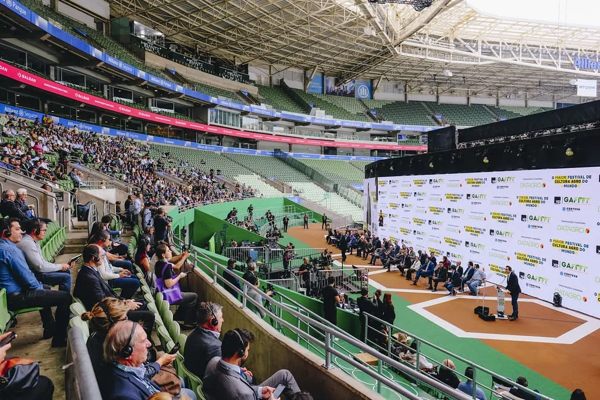
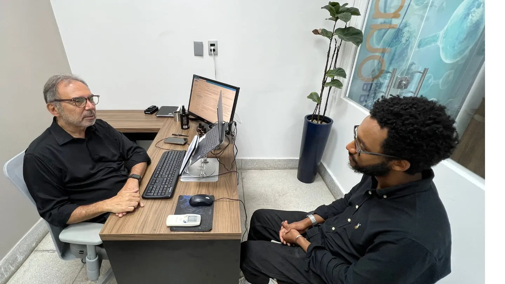
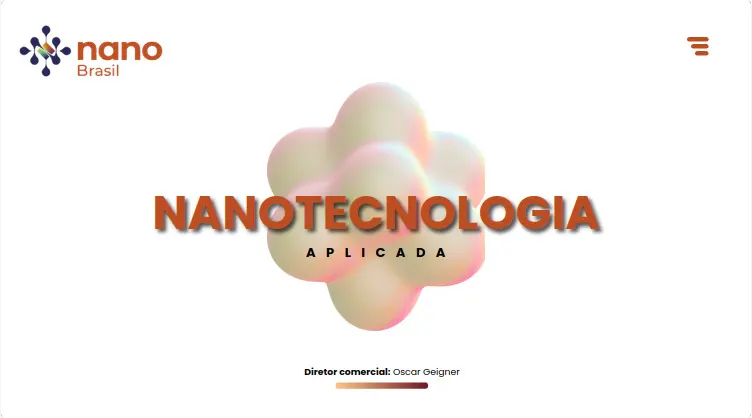

Agencia de Noticias NanoBrasil
Noticias
Proyectos, alianzas, eventos y novedades de NanoBrasil.
29 publicaciones

NanoBrasil es seleccionada por Petrobras para un encuentro estratégico sobre nanomateriales

Con una fábrica de nanopartículas en el horizonte, NanoBrasil y un socio internacional proyectan 2027

Más vida útil, menos mantenimiento: NanoBrasil lleva la nanotecnología al desafío de las carreteras nacionales

El presidente de Finep elogia a NanoBrasil en visita a la empresa: 'Está marcando la diferencia en todo el escenario brasileño'

NanoBrasil amplía su presencia en Santa Catarina y avanza en un desafío con la industria textil

Del piso del galpón avícola al mercado: NanoBrasil articula un nuevo secante con nanotecnología

DE PUNTA A PUNTA: De la UFMG a Drogarias Araújo, el camino de POOF hasta el mercado

Más allá de la humedad: la nanotecnología amplía la acción de los secantes en la cama avícola

NanoBrasil crea una radiografía tecnológica para revelar oportunidades de mercado

El moho entra en la cuenta: la nanotecnología amplía la protección de hoteles, hospitales e industrias

NanoBrasil y la UFLA unen competencias para acelerar la innovación en la avicultura brasileña

Cuando pequeñas lesiones cuestan miles de millones: el impacto invisible de la cama avícola

Una tecnología inédita busca transformar uno de los mayores desafíos de la avicultura brasileña

Alianza con la UFMG refuerza la estrategia de NanoBrasil de conectar ciencia e industria

NanoBrasil transforma la ciencia en oportunidades de negocio en el Minas Summit

Los edificios podrían ayudar a capturar CO₂ de la atmósfera con el apoyo de la nanotecnología

Nanotecnología aplicada a la industria: NanoBrasil desarrolla una solución para un gigante brasileño de pinturas

Esponjas de cocina: el ciclo de contaminación silencioso dentro de su casa

La nanotecnología crea apósitos capaces de tratar heridas de forma inteligente

En el agro y en los negocios: la presencia de NanoBrasil en eventos marca el movimiento de la nueva fase

Nanocobre: NanoBrasil desarrolla un 'apósito inteligente' que cicatriza e hidrata la piel

Del laboratorio a la granja: cómo NanoBrasil resuelve los problemas de la cama avícola

Expansión: NanoBrasil inaugura un nuevo laboratorio con equipos de punta

Incentivo a nuevos investigadores: NanoBrasil acerca a estudiantes de secundaria a la nanotecnología

Conexión con la industria: NanoBrasil presenta la nanotecnología a la industria en un evento en el FIEMG Lab

La nanotecnología en agenda: NanoBrasil recibe la visita de un productor del Jornal Nacional

Solución para la brisa marina más fuerte del mundo: la nanotecnología es clave para evitar la corrosión

Presentación Nanotecnología Aplicada

Referente en nanotecnología, NanoBrasil recibe una comitiva nacional de innovación
No se encontraron noticias.
¿Conversamos?
La nanotecnología puede ser la solución para impulsar su negocio.
Cuéntenos el desafío de su industria. Diseñamos la investigación y suministramos las nanopartículas para llevar la solución a escala.